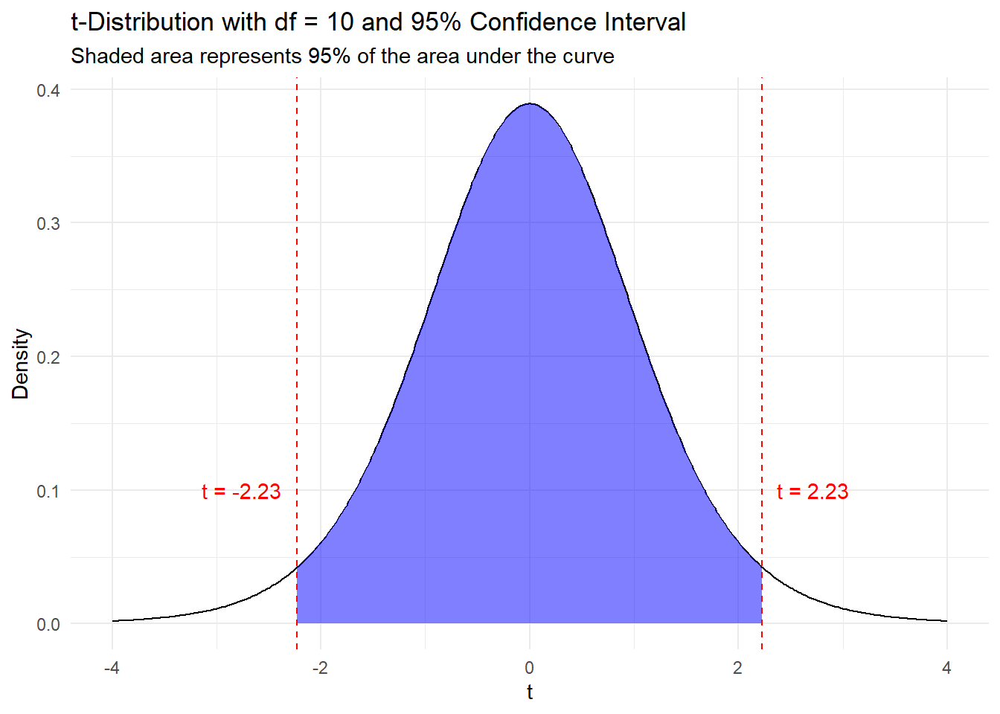

.jpg){kind=link}
library(tidyverse)
library(BSDA)
masters_2023 <- read_csv("masters_2023.csv")PGA - Scoring Average Confidence Intervals
Single Mean Confidence Intervals
Single Mean Hypothesis Testing
Exploring Single Mean Confidence Intervals with Golf Data
Welcome video
Introduction
In this module, you will be exploring the concepts of single mean confidence intervals and single mean hypothesis tests using data from the 2023 Masters tournament. The Masters is considered to be one of the greatest and most selective tournaments in the world of golf. Only the best current players or previous winners are allowed in. The winner of the Masters gets to wear the famed “Green Jacket” and return to play any year they would like at the Masters. The course the Masters is played at, Augusta National, is one of the most beautiful and challenging courses in the world. The course is known for its fast greens and tight fairways. The Masters is the first major of the year and is played in early April. The tournament is played over four days. After 2 days, the top 50 players and ties make the cut and play the final two days.

Image Source: Ryan Schreiber, CC BY 2.0, via Wikimedia Commons
View the course at Augusta National here
As mentioned before, only the best players and previous winners can compete in the tournament, With that being said, the Masters is one of the few tournaments that players from the newly created LIV golf tour can play in, although they are mostly qualifying because of their past performances at the Masters before they joined LIV golf. This leads to a mixture of regular PGA professionals, LIV professionals, Amateurs, and Seniors playing in the Masters in 2023.
The focus for this module is confidence intervals and hypothesis testing for the true mean scores for different groups of players at Augusta National.
NOTE: R is the name of the programming language itself and RStudio is a convenient interface. You may be accessing RStudio through a web-based version called Posit Cloud. But R is the programming language you are using.
Getting started: 2023 Masters Data
The first step to any analysis in R is to load necessary packages and data.
You can think of packages like apps on your phone; they extend the functionality and give you access to many more features beyond what comes in the “base package”.
Running the following code will load the tidyverse and BSDA packages and the masters_2023 data we will be using in this lab.
TIP: As you follow along in the lab, you should run each corresponding code chunk in your .qmd document. To “Run” a code chunk, you can press the green “Play” button in the top right corner of the code chunk in your .qmd. You can also place your cursor anywhere in the line(s) of code you want to run and press “command + return” (Mac) or “Ctrl + Enter” (Windows).
We can use the glimpse() function to get a quick look at our masters_2023 data. The glimpse code provides the number of observations (Rows) and the number of variables (Columns) in the dataset. The “Rows” and “Columns” are referred to as the dimensions of the dataset. It also shows us the names of the variables and the first few observations for each variable.
glimpse(masters_2023)Rows: 277
Columns: 4
$ player <chr> "Jon Rahm", "Jon Rahm", "Jon Rahm", "Jon Rahm", "Phil Mickelson…
$ round <dbl> 1, 2, 3, 4, 1, 2, 3, 4, 1, 2, 3, 4, 1, 2, 3, 4, 1, 2, 3, 4, 1, …
$ score <dbl> 65, 69, 73, 69, 71, 69, 75, 65, 65, 67, 73, 75, 69, 70, 76, 66,…
$ tour <chr> "PGA", "PGA", "PGA", "PGA", "LIV", "LIV", "LIV", "LIV", "LIV", …Another useful function to get a quick look at the data is the head() function. This function shows the first few rows of the dataset.
head(masters_2023)# A tibble: 6 × 4
player round score tour
<chr> <dbl> <dbl> <chr>
1 Jon Rahm 1 65 PGA
2 Jon Rahm 2 69 PGA
3 Jon Rahm 3 73 PGA
4 Jon Rahm 4 69 PGA
5 Phil Mickelson 1 71 LIV
6 Phil Mickelson 2 69 LIV
TIP: Type your answers to each exercise in the .qmd document.
Terms to know
Before proceeding with the analysis, let’s make sure we know some important golf terminology that will help us master this lab.
Golf Terminology
- Par in golf is the amount of strokes that a good golfer is expected to take to get the ball in the hole.
- Each hole in golf has its own par. There are par 3 holes, par 4 holes, and par 5 holes.
- There are 18 holes on a golf course and the pars of each of these holes sums to par for the course, also known the course par.
- A round in golf is when a golfer plays the full set of 18 holes on the course.
- In most professional golf tournaments, all golfers play 2 rounds, the best golfers are selected and those golfers play 2 more rounds for a total of 4 rounds.
PGA vs. LIV
Click here to read about LIV golf’s founding and its continued impact on the PGA tour.
Variable descriptions
The masters_2023 data you’ll be analyzing in this lab provides scores for each round by each golfer in the 2023 Masters. The data includes the names of golfers, the round, their scores, and their tour.
Variable Descriptions
| Variable | Description |
|---|---|
player |
Golfer’s name |
round |
Round of the tournament |
score |
Score for the 18-hole course |
tour |
The tour the player generally competes on |
Single Mean Confidence Intervals
Single mean confidence intervals give a range of numbers that the we can feel confident that the true population mean falls between.
There are two different ways of calculating the confidence interval for a single mean.
t-interval for single means
A t-distribution is used for calculating a single mean confidence interval if the sample size is small (rule of thumb: less than 30) and the population standard deviation is unknown.
The formula for calculating a CI using this method is shown below: \[CI = \bar{X} \pm t_{\alpha/2, df} \times \frac{S}{\sqrt{n}}\]
Click here to learn more about the t-distribution and play around with t-distribution graphs.
Where \(\bar{X}\) is the sample mean,
\(t_{\alpha/2, df}\) is the critical value for the t-distribution with \(df = n-1\),
\(S\) is the sample standard deviation,
and \(n\) is the sample size.
NOTE: The t-distribution changes based on the degrees of freedom, approaching the normal distribution as the degrees of freedom increase.
The critical value for the t-distribution is determined by the confidence level and the degrees of freedom. This is calculated by finding the value of \(t_{\alpha/2, df}\) such that the area under the t-distribution curve (with that specific degrees of freedom) between \(-t_{\alpha/2, df}\) and \(t_{\alpha/2, df}\) is equal to the confidence level.

NOTE: Using R to calculate the critical value for the t-distribution saves time and adds accuracy compared to using a t-table.
R can easily calculate the critical value for the t-distribution using the qt() function.
The qt() function takes two arguments: the first is the confidence level, and the second is the degrees of freedom. The example below shows how to calculate the t-value for a 95% confidence level with 10 degrees of freedom.
Note that the 95% confidence interval has \(\alpha = .05\) and \(\alpha / 2 = .025\) so we need to use qt(.975, df= 10) or qt(.025, df = 10) to find the critical values.
qt(0.975, df = 10)[1] 2.228139TIP: Values and objects can be stored in variables in R. For example, x <- 5 stores the value 5 in the variable x.
TIP: The pipe operator is a powerful tool in R that allows you to chain functions together. It is denoted by |> and is used to pass the output of one function to the input of another function.
TIP: The pull() function is used to extract a single column from a data frame as a vector.
TIP: The nrow() function is used to calculate the number of rows in a data frame.
TIP: When interpreting a confidence interval do not say “there is a 90% chance that the true mean is between the lower and upper bounds”. Instead, say “we are 90% confident that the true mean is between the lower and upper bounds”.
TIP: Only the t_cv variable needs to be changed to recompute with the new confidence interval. Use qt(0.995, df = n - 1) to calculate the critical value for the new 99% confidence interval.
z-interval for single means
A standard normal distribution (also known as a z-distribution) is used to calculate the confidence interval for a single mean if the sample size is large enough (greater than 30) or the population standard deviation is known. The first case is common as oftentimes samples are greater than 30. The second case is rare because it is uncommon to know the population standard deviation but not the population mean.
The formula for the confidence interval for a single mean using the z-distribution is very similar to that of the t-distribution
Click here for more information about the standard normal distribution.
\(CI = \bar{X} \pm Z_{\alpha/2} \times \frac{\sigma}{\sqrt{n}}\)
Where \(\bar{X}\) is once again the sample mean, \(Z_{\alpha/2}\) is the critical value for the standard normal distribution at the specified confidence level, \({\sigma}\) is the population standard deviation, and \(n\) is the sample size.
The reasoning behind why we can use the standard normal distribution when the sample is greater than 30 even if the population standard deviation is unknown is found in the Central Limit Theorem, which says that as the sample size increases, the sampling distribution of the sample mean approaches a normal distribution. This means that when the sample size is greater than 30 we can use the sample standard deviation to estimate the population standard deviation and create a confidence interval as seen below
\(CI = \bar{X} \pm Z_{\alpha/2} \times \frac{S}{\sqrt{n}}\)
Once again the critical value for the z-distribution is the value of \(Z_{\alpha/2}\) such that the area under the standard normal distribution curve between \(-Z_{\alpha/2}\) and \(Z_{\alpha/2}\) is equal to the confidence level.
R can compute the z-value for you using the qnorm() function. The qnorm() function takes in the probability and returns the z-value that corresponds to that probability. For example, qnorm(.975) will return the z-value that corresponds to the 97.5th percentile of the standard normal distribution. No degrees of freedom are needed.
The code below calculates the critical values for the z-distribution for a 95% confidence interval.
(Note that .975 is used for a 95% confidence interval because \(\alpha = .05\) and since the confidence interval is two sided we need half of the error each side so \(\alpha / 2 = .025\), which means we want to use qnorm(.975) or qnorm(.025))
qnorm(.975)[1] 1.959964qnorm(.025)[1] -1.959964R for Single Mean Confidence Intervals
R functions can help to speed up the process of finding these confidence intervals and will also help us with testing hypotheses later. The t.test function from the stats package makes a confidence interval for the t-distribution and the z.test function from the BSDA package does the same for the standard normal distribution.
Run the code below to view what type of arguments these functions take, what they output, and the see some example uses
?t.test
?z.testThese functions return more than just a confidence interval. If we want to see just the confidence interval $conf.int should be used. Run the example below to see how this is done.
# t-test example
seniors_round1 <- masters_2023 |>
filter(round == 1, tour == "Senior")
t.test(seniors_round1$score, conf.level = .95)$conf.int[1] 72.39194 79.03663
attr(,"conf.level")
[1] 0.95# z-test example
pga_round2 <- masters_2023 |>
filter(round == 2, tour == "PGA")
## Note that the Z test require the standard deviation to be passed in as an argument `sigma.x`
z.test(pga_round2$score,
sigma.x = sd(pga_round2$score),
conf.level = .95)$conf.int[1] 72.24391 73.71973
attr(,"conf.level")
[1] 0.95TIP: The $ operator is used to access a specific element of a list. In this case, the conf.int element of the list returned by the t.test and z.test functions. It can also be used to access elements of data frames and other objects in R. The line of code seniors_round1$score is used to access the score column of the seniors_round1 data frame.
TIP: Notice that the z.test function requires the standard deviation to be passed in as an argument sigma.x. Use the sd() function to calculate the standard deviation of the sample and use it as an estimate the population standard deviation.
TIP If you didn’t create the amateur_round1 sample earlier run the code below
amateur_round1 <- masters_2023 |>
filter(round == 1, tour == "Amateur")TIP If you didn’t create the pga_round1 sample earlier run the code below
pga_round1 <- masters_2023 |>
filter(round == 1, tour == "PGA")Hypothesis Testing with Single Mean Confidence Intervals
Hypothesis testing is a method used to determine if a claim about a population parameter is true or not. In this section, we will perform the most common type of hypothesis test, a single mean test. The null hypothesis (\(H_0\)) is that the population mean is equal to a specific value, and the alternative hypothesis (\(H_a\)) is that the population mean is not equal to that value, greater than that value, or less than that value.
Null Hypothesis: \(H_0: \mu = \mu_0\)
Alternative Hypothesis Options:
\(H_a: \mu \neq \mu_0\) or
\(H_a: \mu > \mu_0\) or
\(H_a: \mu < \mu_0\)
Test Statistics
Like confidence intervals, we have two different tests for hypothesis testing for the population mean. Remember that if the population standard deviation is unknown and the sample size is less than 30, we use the t-distribution. If the population standard deviation is known or the sample size is greater than 30, we use the standard normal distribution.
Each of these distributions have their own tests, the t-test and the z-test. This means that we have different test statistics to calculate depending on the situation.
t-test
The t-test statistic is calculated using the formula:
\[t = \frac{\bar{x} - \mu_0}{\frac{s}{\sqrt{n}}}\]
where \(\bar{x}\) is the sample mean, \(\mu_0\) is the hypothesized population mean, \(s\) is the sample standard deviation, and \(n\) is the sample size.
z-test
The z-test statistic is calculated using the formula:
\[z = \frac{\bar{x} - \mu_0}{\frac{\sigma}{\sqrt{n}}}\]
where \(\bar{x}\) is the sample mean, \(\mu_0\) is the hypothesized population mean, \(\sigma\) is the population standard deviation, and \(n\) is the sample size.
To Reject or Fail to Reject
There are two ways to make a decision about the null hypothesis.
Method 1: Critical values, along with test statistics, can be used to determine if the hypothesized population mean is within the confidence interval for the true mean.
A critical value is a value that separates the rejection region from the non-rejection region. The rejection region is the area where the null hypothesis is rejected. The non-rejection region is the area where the null hypothesis is not rejected. The critical value is determined by the significance level (\(\alpha\)) and the degrees of freedom (if it is a t-test). The critical value is compared to the test statistic to determine if the null hypothesis should be rejected. If the test statistic is within the non-rejection region, the null hypothesis is not rejected. If the test statistic is within the rejection region, the null hypothesis is rejected and the alternative hypothesis is accepted.
Below is an example of using critical values and a test-statistic for a z-test with a 95% confidence level (two-sided). The critical value is 1.96. This means that if the test statistic is greater than 1.96 or less than -1.96, the null hypothesis is rejected. The blue represents the non-rejection region and the red the rejection region. Since the Test Statistic for this hypothetical example is 1.1 (less than 1.96 and greater than -1.96), we fail to reject the null hypothesis.

This method corresponds directly to the related confidence intervals produced for the sample data.
If the hypothesized population mean is within the confidence interval, we fail to reject the null hypothesis. If the hypothesized population mean is not within the confidence interval, the null hypothesis is rejected and the alternative hypothesis is accepted.
Note: We can say that there is significant evidence to accept the alternative hypothesis if the null hypothesis is rejected. However, it should never be said that we accept the null hypothesis. We can only fail to reject it.
Method 2: The second method is to use a p-value. The p-value is the probability of observing a test statistic as extreme as the one calculated from the sample data given that the null hypothesis is true. The p-value is compared to the significance level (\(\alpha\)) to determine if the null hypothesis should be rejected. If the p-value is less than \(\alpha\), the null hypothesis is rejected. If the p-value is greater than \(\alpha\), the null hypothesis is not rejected.
For example, if the p-value for a single mean hypothesis test is 0.03 and the significance level is 0.05, the null hypothesis is rejected because the p-value is less than the significance level.
Hypothesis testing in R
Thankfully R can help us with this as well. The t.test function and the z.test function can both perform hypothesis tests.
The code below tests if the true mean is not equal to 50 given that the example_vector is our sample. The confidence level is set to 95%.
example_vector <- seq(10, 100, by = 10)
t.test(example_vector, mu = 50, alternative = "two.sided", conf.level = .95)
One Sample t-test
data: example_vector
t = 0.52223, df = 9, p-value = 0.6141
alternative hypothesis: true mean is not equal to 50
95 percent confidence interval:
33.34149 76.65851
sample estimates:
mean of x
55 As can be seen in the output of the code above, the p-value is 0.61, which is much greater than the significance level of 0.05. The test-statistic is 0.522 which is within the non-rejection region since critical values for this test would be -2.26 and 2.26. Therefore, we fail to reject the null hypothesis.
Hypothesizing Par as the Population Mean
Augusta National is breathtakingly beautiful, but if golfers get distracted by the scenic views, tall pines, bunkers, water, and azaleas may catch their balls.
Image Source: Your Golf Travel, CC 4.0
In golf par is considered to be the number of strokes a good golfer is expected to take. The par for the course at Augusta National is 72. It is known that Augusta National is a tougher than usual course but we would like to test if that is the case for different groups.
Our null hypothesis will generally be that the mean of the group is equal to 72.
Amateurs generally struggle in the Masters, but in 2023 Sam Bennett, a Texas A&M student, made the cut and finished 16th. However, due to his amateur status, he was not eligible to win money and missed out on $261,000.
TIP Use the $score column from the pga_round1 sample as the first argument in the z.test function
TIP Remember that the z.test function requires the population standard deviation as the second argument. Use the sd function to calculate the standard deviation of the pga_round1 sample.
sd(pga_round1$score)More practice
If you would like more practice with confidence intervals and hypothesis testing, try the following exercises.
Fun fact: In the 2023 Masters Tournament, the average score for LIV golfers was just slightly worse (72.91) than the average score for PGA golfers (72.55). However, the average score for amateurs (74.56) and seniors (76.31) was significantly higher.
TIP: Check the number of observations in the pro_round4 sample using the nrow function, by looking in your global environment, or by using the glimpse function in order to determine the correct function to use.
Think on it: The average score for the first 2 rounds of the 2023 Masters Tournament was 72.8, while the average score for the last 2 rounds was 73.22. This is interesting because only the top players make it to the last 2 rounds, so you would expect the scores to be lower. What could have changed so that the best players are now scoring worse?